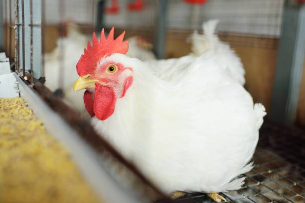
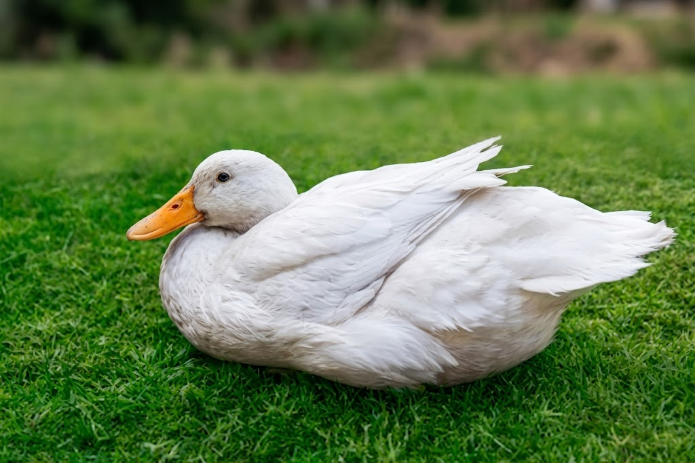
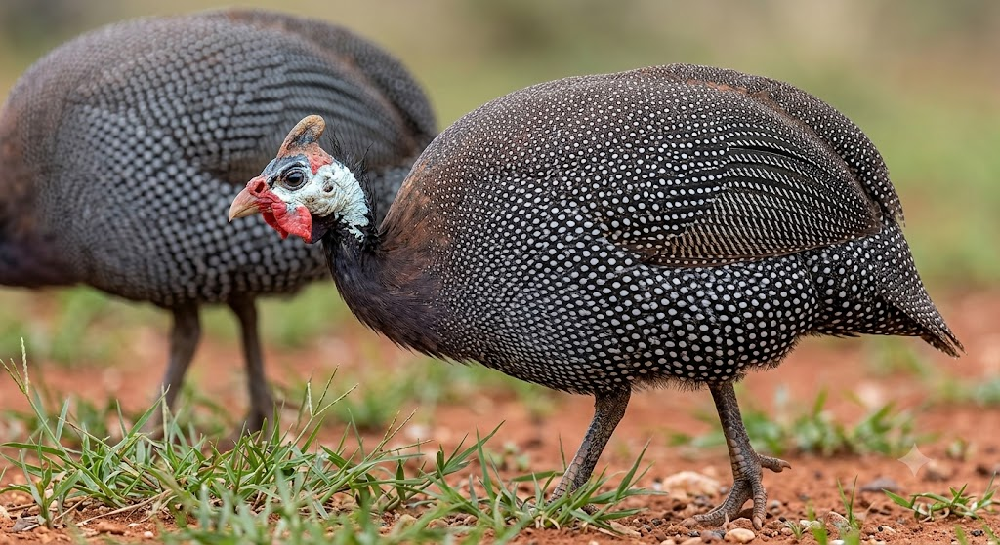
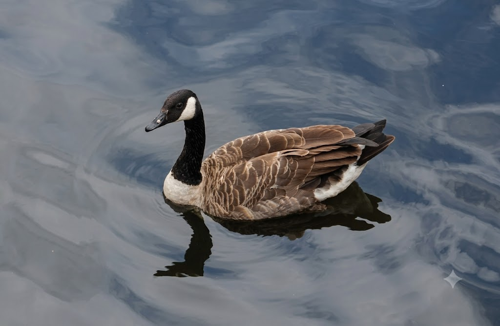
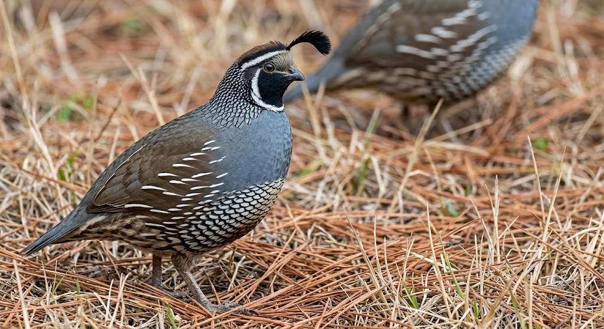
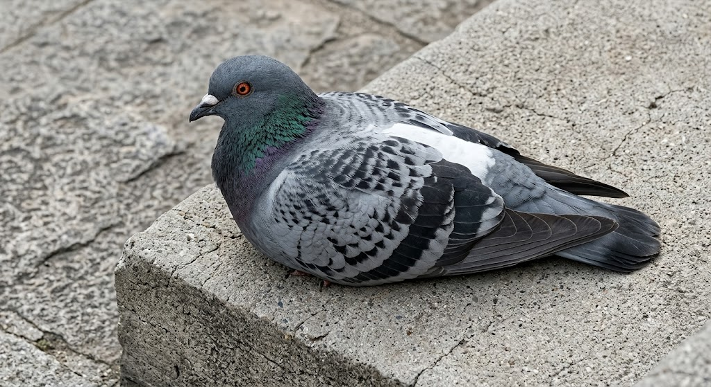
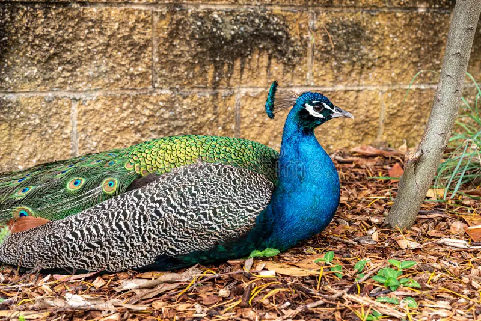
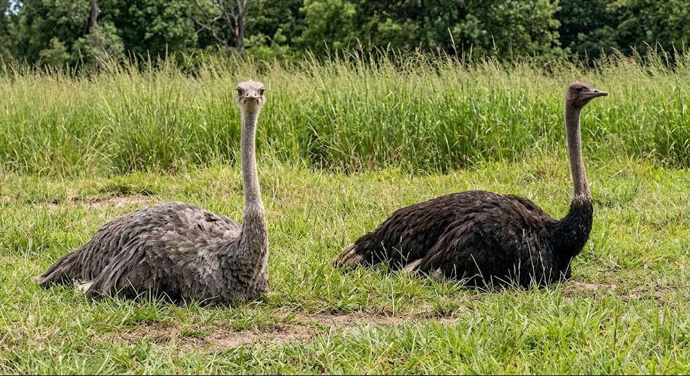
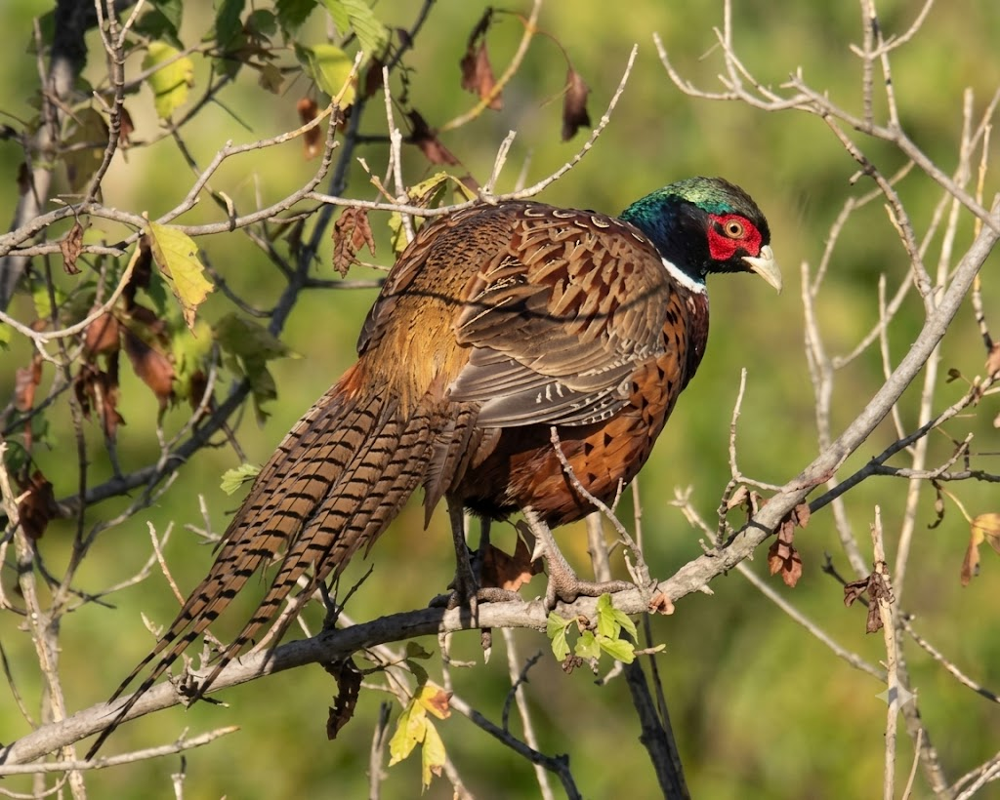

Comprehensive step-by-step guides for raising healthy and productive poultry flocks.

Broilers are raised specifically for meat production. They grow rapidly and require careful management to achieve optimal weight and feed conversion ratios.
Provide well-ventilated housing with adequate floor space (0.5-0.8 sq ft per bird). Use deep litter system with clean bedding material. Install feeders, drinkers, brooders, and proper lighting systems.
Source day-old chicks from reputable hatcheries. Ensure they are healthy, active, and vaccinated. Maintain brooding temperature at 32-35°C for the first week, reducing gradually each week.
Provide starter feed (23% protein) for the first 4 weeks, then grower feed (20% protein) until 6 weeks, and finisher feed (18% protein) from 6-8 weeks. Ensure clean water is always available.
Vaccinate against Newcastle disease and Gumboro disease. Practice strict biosecurity. Monitor for common diseases like coccidiosis, respiratory infections, and bacterial infections.
Market birds at 6-8 weeks of age. Identify buyers (supermarkets, restaurants, wholesalers). Process and package properly for quality maintenance.

Layers are raised for egg production. They require specialized management to maximize egg production and quality over their laying cycle.
Provide well-designed housing with proper ventilation. Use battery cages or deep litter systems. Install nest boxes, feeders, drinkers, and lighting systems (16 hours of light daily).
Source day-old pullet chicks from reputable hatcheries. Rear chicks in separate brooding facilities for 4-5 months before transferring to laying houses.
Provide starter feed (20-22% protein) for 0-8 weeks, grower feed (16-18% protein) for 8-18 weeks, and layer mash (16-18% protein) from 18 weeks onwards. Supplement with calcium and oyster shells.
Vaccinate against Newcastle, Gumboro, Fowl Pox, and other common diseases. Monitor health regularly. Maintain good hygiene and biosecurity.
Collect eggs 2-3 times daily to maintain quality. Store eggs at 10-15°C. Grade and package eggs for market. Monitor egg production and quality regularly.
Market eggs to supermarkets, restaurants, bakeries, and local markets. Establish reliable supply chain and maintain consistent quality.

Local chickens are hardy birds well-adapted to free-range systems. They have excellent market demand for their meat and eggs.
Provide simple, well-ventilated housing that protects from predators and harsh weather. Include perches, nesting boxes, and clean water sources. Allow access to outdoor areas for foraging.
Source local chicks from community breeders or hatcheries. Allow hens to brood naturally or use brooding equipment. Provide proper care during the chick stage.
Provide layer mash or grower feed as supplements. Allow birds to forage for insects, seeds, and green matter. Ensure clean water is always available.
Vaccinate against Newcastle disease, Gumboro, and Fowl Pox. Monitor for parasites, respiratory issues, and common diseases. Practice good hygiene and biosecurity.
Collect eggs regularly. Local breeds may lay fewer but larger eggs. Maintain clean nesting boxes for optimal egg quality.
Local chickens and their products are often in high demand. Market to local communities, restaurants, and traditional markets.

Turkeys are large poultry birds with high meat value. They require specialized management and are popular during festive seasons.
Provide spacious, well-ventilated housing (2-3 sq ft per bird). Include strong perches and sturdy feeders. Protect from predators and harsh weather conditions.
Source day-old poults from reputable hatcheries. Maintain brooding temperature at 35-38°C for the first week. Handle carefully as poults are more sensitive than chicks.
Provide starter feed (28% protein) for 0-4 weeks, grower feed (22% protein) for 4-12 weeks, and finisher feed (16-18% protein) from 12 weeks onwards. Ensure clean water is always available.
Vaccinate against Newcastle, Fowl Pox, and Blackhead disease. Monitor for respiratory issues and parasites. Practice strict biosecurity and good hygiene.
Market turkeys during festive seasons (Christmas, Easter, Thanksgiving). Target restaurants, hotels, and direct consumers.

Ducks are waterfowl that can be raised for both meat and eggs. They are hardy birds that thrive in wet environments.
Provide well-ventilated housing with access to water (pond, trough, or sprinkler). Include sturdy feeders and drinkers. Ducks do not require perches but need clean, dry bedding.
Source day-old ducklings from reputable breeders. Maintain brooding temperature at 32-35°C for the first week. Provide access to shallow water for drinking and swimming.
Provide starter feed (22% protein) for 0-4 weeks, grower feed (18% protein) for 4-12 weeks, and layer feed (16-18% protein) for laying ducks. Ensure clean water is always available.
Vaccinate against Duck Plague, Duck Hepatitis, and other common diseases. Monitor for parasites, respiratory issues, and infections. Practice good hygiene.
Ducks typically lay eggs at night. Collect eggs early morning. Ducks eggs have rich flavor and are in high demand for baking and culinary uses.
Market ducks and duck eggs to restaurants, hotels, and local markets. Duck meat is popular in many cuisines.

Guinea fowl are hardy birds valued for their gamey meat and pest control abilities. They are excellent free-range birds with strong survival instincts.
Provide secure housing to protect from predators. Include roosting perches and nesting boxes. Guinea fowl prefer roosting high. Access to outdoor ranging areas is essential.
Source keets from reputable breeders. Maintain brooding temperature at 32-35°C for the first week. Keets are more sensitive than chicks and require careful handling.
Provide starter feed (24% protein) for 0-4 weeks, grower feed (18-20% protein) from 4 weeks onwards. Allow foraging for insects and seeds. Ensure clean water is always available.
Vaccinate against Newcastle disease and Gumboro. Monitor for respiratory issues and parasites. Guinea fowl are generally hardy with strong natural immunity.
Guinea fowl lay eggs seasonally. Collect eggs regularly as they may hide their nests. Guinea fowl eggs have rich flavor and are prized in gourmet markets.
Market guinea fowl and their eggs to restaurants, specialty markets, and local consumers. They are valued for their gamey meat and organic feeding.

Geese are large waterfowl raised for meat, eggs, and as guard animals. They are hardy, efficient grazers, and have strong protective instincts.
Provide spacious housing with access to pasture and water. Geese are excellent grazers and require outdoor access. Include secure fencing to protect from predators.
Source day-old goslings from reputable breeders. Maintain brooding temperature at 32-35°C for the first week. Goslings grow rapidly and require high-quality feed.
Provide starter feed (20-22% protein) for 0-4 weeks, grower feed (16-18% protein) from 4 weeks onwards. Allow grazing on grass and vegetation. Ensure clean water is always available.
Vaccinate against common poultry diseases. Monitor for parasites, respiratory issues, and infections. Geese are generally hardy but require good management.
Geese lay eggs seasonally (typically spring). Collect eggs daily. Goose eggs are larger than chicken eggs and are prized for baking.
Market geese and goose eggs to restaurants, specialty markets, and local consumers. Goose meat is considered a delicacy in many cultures.

Quail are small birds raised for their meat and nutritious eggs. They have fast growth rates and high egg production, making them a profitable venture.
Provide well-ventilated housing with adequate space (0.5-0.75 sq ft per bird). Use wire cages or deep litter systems. Install feeders, drinkers, and proper lighting.
Source day-old quail chicks from reputable breeders. Maintain brooding temperature at 35-37°C for the first week. Quail chicks are small and require careful handling.
Provide starter feed (24-26% protein) for 0-4 weeks, grower feed (20-22% protein) from 4-6 weeks, and layer feed (18-20% protein) for laying quail. Ensure clean water is always available.
Monitor for common diseases. Quail are generally hardy but susceptible to respiratory issues. Maintain good hygiene and biosecurity.
Quail begin laying at 6-7 weeks. Collect eggs daily. Quail eggs are highly nutritious and have growing market demand.
Market quail meat and eggs to restaurants, health food stores, and local markets. Quail products are considered gourmet and have high value.

Pigeons are raised for squab meat, which is considered a delicacy. They are low-maintenance birds that can be profitable in specialty markets.
Provide well-ventilated pigeon lofts with nesting boxes and perches. Pigeons are social birds and thrive in colonies. Include feeders and drinkers.
Source healthy breeding pairs from reputable breeders. Pigeons breed readily and rear their young (squabs) naturally. Provide proper care during the breeding season.
Provide a balanced diet of grains (corn, wheat, sorghum, millet). Supplement with calcium and minerals. Ensure clean water is always available.
Monitor for respiratory infections, parasites, and Salmonella. Maintain good hygiene and biosecurity. Pigeons are generally hardy with proper care.
Market squab meat to restaurants and specialty markets. Squab is considered a delicacy and commands premium prices.

Peafowl are ornamental birds valued for their beauty, feathers, and meat. They can be a niche market for specialty farms and conservation efforts.
Provide spacious, secure housing with roosting perches. Peafowl need protection from predators and harsh weather. Include access to outdoor ranging areas.
Source peachicks from reputable breeders. Maintain brooding temperature at 35-37°C for the first week. Peachicks are sensitive and require careful handling.
Provide starter feed (20-24% protein) for the first 8 weeks, grower feed (16-18% protein) from 8 weeks onwards. Allow foraging and supplement with grains and greens.
Vaccinate against Newcastle disease and other common diseases. Monitor for parasites and respiratory issues. Practice good hygiene and biosecurity.
Market peafowl to zoos, conservation centers, ornamental farms, and specialty buyers. Peafowl feathers and meat have niche markets.

Ostriches are large flightless birds raised for meat, feathers, and leather. They are a niche livestock venture with high-value products.
Provide spacious, secure housing with large outdoor areas. Ostriches require 0.5-1 acre per breeding pair. Install strong fencing for predator protection.
Source day-old ostrich chicks from reputable breeders. Maintain brooding temperature at 30-35°C for the first week. Ostriches require specialized care and housing.
Provide starter feed (20-22% protein) for 0-3 months, grower feed (16-18% protein) from 3-12 months, and maintenance feed (12-14% protein) for adults. Ensure clean water is always available.
Monitor for respiratory issues, parasites, and digestive problems. Ostriches are susceptible to certain diseases. Maintain strict biosecurity.
Market ostrich meat, leather, and feathers to specialty buyers. Ostrich products have high value in luxury markets.

Pheasants are game birds raised for meat, hunting, and ornamental purposes. They have niche markets and can be profitable with proper management.
Provide secure housing with covered runs to prevent escape. Include perches, nesting areas, and protection from predators. Pheasants need outdoor ranging areas.
Source day-old pheasant chicks from reputable breeders. Maintain brooding temperature at 35-37°C for the first week. Pheasant chicks are sensitive and require careful handling.
Provide starter feed (24-26% protein) for 0-4 weeks, grower feed (18-20% protein) from 4-12 weeks, and maintenance feed (14-16% protein) for adults. Allow foraging.
Vaccinate against common poultry diseases. Monitor for respiratory issues, parasites, and infections. Maintain good hygiene and biosecurity.
Market pheasant meat, feathers, and live birds to restaurants, hunting clubs, and specialty buyers. Pheasant is considered a game delicacy.
| Poultry Type | Primary Product | Growth Period | Housing Space (sq ft/bird) | Feed Protein (%) | Special Needs |
|---|---|---|---|---|---|
| Broilers | Meat | 6-8 weeks | 0.5-0.8 | 18-23 | Temperature control |
| Layers | Eggs | 18-24 weeks (to lay) | 1.0-1.5 | 16-20 | Lighting management |
| Local Chickens | Meat & Eggs | 16-24 weeks | 1.5-2.0 | 16-18 | Free-range access |
| Turkeys | Meat | 16-24 weeks | 2.0-3.0 | 16-28 | More space, perches |
| Ducks | Meat & Eggs | 8-12 weeks | 1.0-1.5 | 16-22 | Water access |
| Guinea Fowl | Meat & Eggs | 14-20 weeks | 1.5-2.0 | 18-24 | Roosting perches |
| Geese | Meat, Eggs | 12-16 weeks | 2.0-3.0 | 16-22 | Pasture access |
| Quail | Meat & Eggs | 6-8 weeks | 0.5-0.75 | 18-26 | Small space |
| Pigeons | Meat (Squab) | 4-6 weeks (squab) | 1.0-1.5 | 12-16 | Breeding pairs |
| Peafowl | Ornamental | 2-3 years (mature) | 3.0-5.0 | 16-24 | Large space |
| Ostrich | Meat, Leather | 12-14 months | 0.5 acre/pair | 12-22 | Large space |
| Pheasants | Meat, Game | 16-20 weeks | 1.5-2.5 | 14-26 | Game bird care |
Whether you're raising broilers, layers, turkeys, ducks, or other poultry, AFOD VENTURES is here to provide the expertise and practical support you need to build a successful poultry enterprise. Reach out to our team to discuss your poultry goals and discover how we can help you succeed.
Contact Us Today